教室の外へ、飛び込む。
DO ｜ 身体性・社会性土を耕し、地域に出て、誰かのために働く。「ありがとう」の重みを、体で知る毎日です。
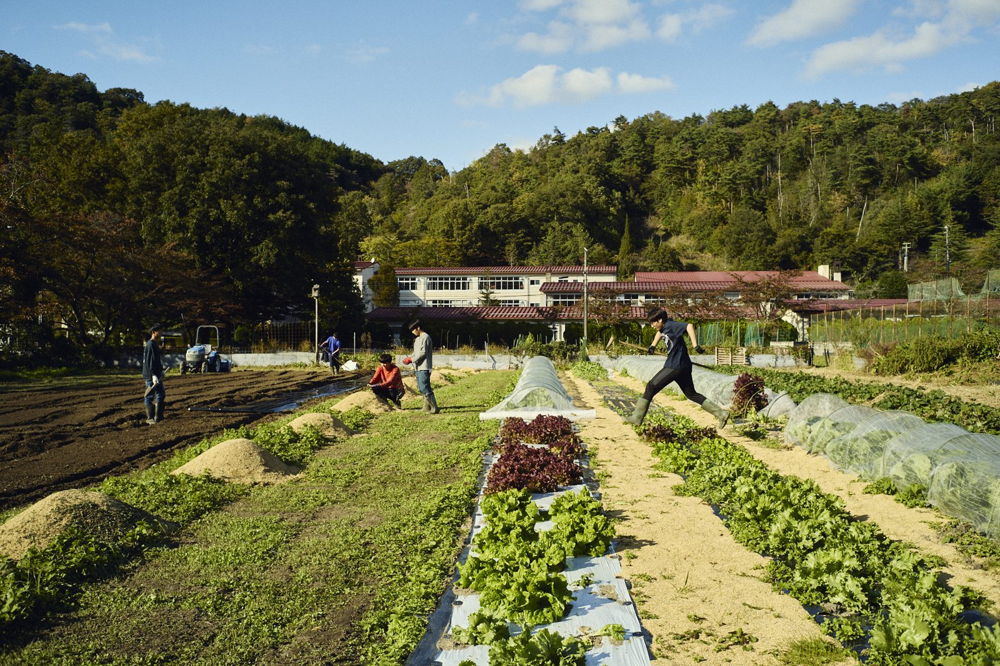
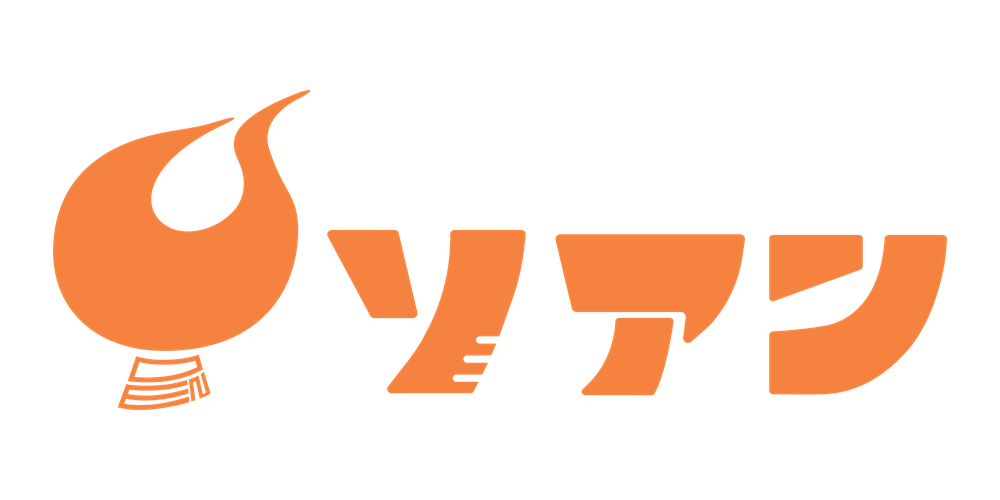
SOEN — SOCIAL ENTREPRENEUR PROJECT語れる体験は、あるか。
地域をフィールドに、社会課題と向き合う。広島三育学院から生まれた、社会体験型教育プロジェクト。社会の困りごとに仮説を立て、限られた資源で価値を生む。その挑戦の過程が、AIにはできない「語れる体験」を生みます。
2023年始動。第15回キャリア教育アワード 最優秀賞（大賞）、大阪・関西万博 オーストラリアパビリオン ステージ出演 ほか
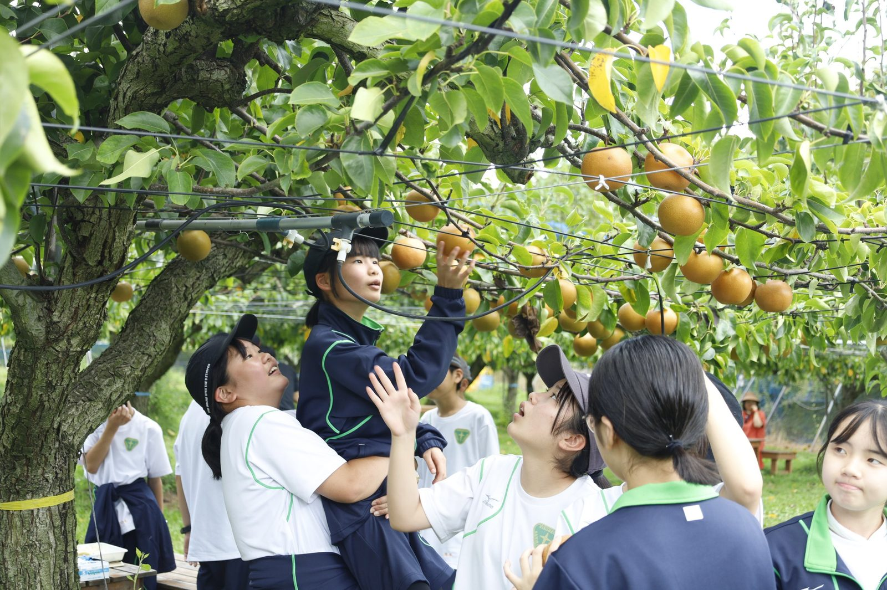
ソアンは、3つの仕組みで動いています。
地域プロジェクトチーム
教員がつないだ地域の課題に、チームで取り組みます。
完全自主参加チーム Venture
生徒自らが課題を見つけ、プロジェクトチームを立ち上げます。
完全自主参加全校ソアン活動／ソアン探求
全員が参加できるよう、学校の中に仕組み化された活動です。中学生も高校生も、誰もがソアンを経験できます。
全員参加01・02は、生徒が空いている時間を見つけて活動時間を確保。お昼ご飯を食べながらチームミーティングをしたり、放課後や学校指定の休日に地域へ出かけたりしています。
5つの活動
「チームで企画立案し、複数校がプレゼンを行うコンテストに参加。自分たちで考えて行った経験は楽しかったそうで、自信を得たように感じます。」
高3保護者「ソアン活動を通して『ありがとう』の言葉が嬉しかった。ありがとうの一言でも重みがあると言っていた。」
高1保護者「究める」ではなく、「求める」。
常に探し求める姿勢を大切にしてほしいという願いを込めて、「求める」という字を使っています。ソアンプロジェクトと並行し、社会課題の解決を探究学習の視点で実践的に学びます。
ソアン探求
アカデミックベースとプロジェクトベースに分かれ、探求サイクルを経験
地域探求
地域で実際にアクションを起こす
進路探求
2年間を振り返り、進路へまとめる
あわせて、キリスト教コア探求（CMM・ACTS・教理探究）を2年次は選択必修、3年次は選択で学びます。
他者に仕える心と、手を動かす力。
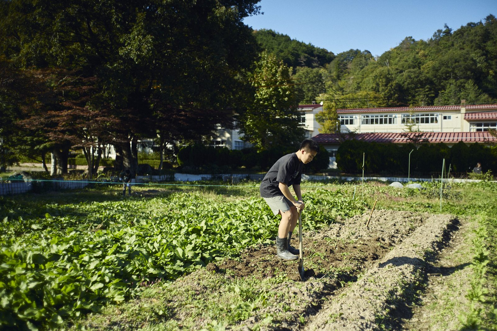
中学校班別農業・作業
1年間かけてチームで区画の除草から畝作り、植え付け、収穫まで。作業は週3時間、農業から草刈り、修繕、清掃まで学びます。
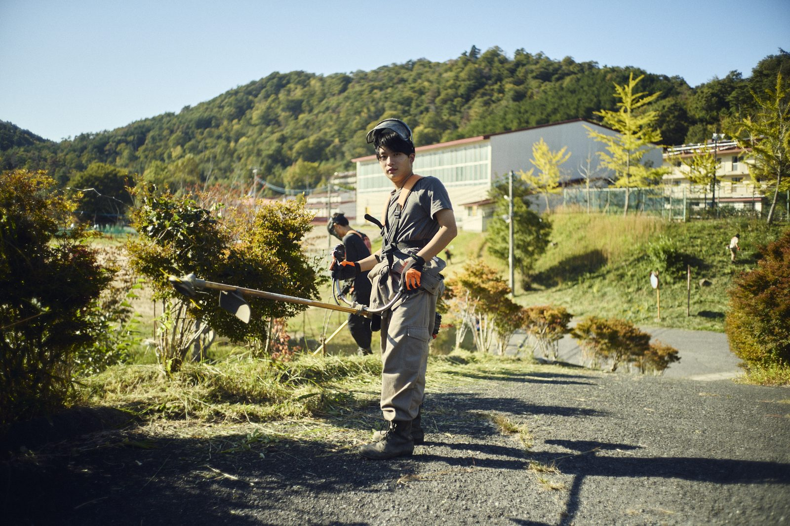
高等学校週5時間の労作
キャンパス内施設の維持管理からメディア関係まで、幅広い部門で作業を行います。
「学校の山で採った渋柿で、友達に教えてもらいながら干し柿作りに挑戦。カビも生やさず、とても美味しく仕上げていて感心しました。」
高1保護者実際に見ないと、わからないことがある。
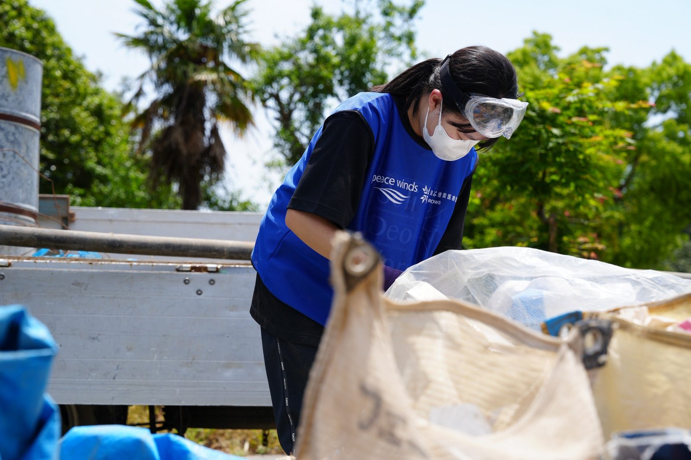
災害復興ボランティア
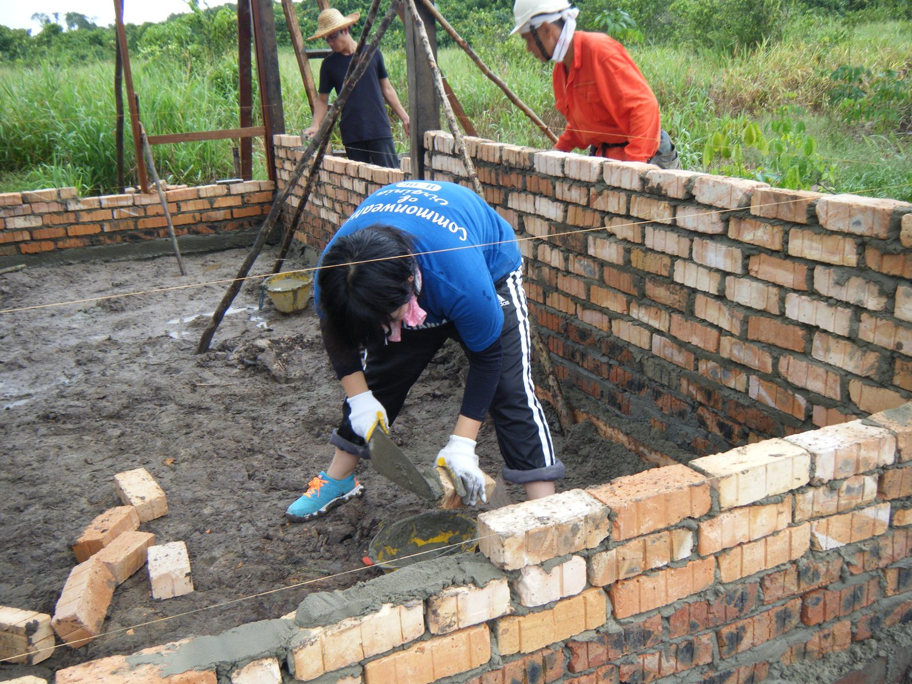
海外ボランティア
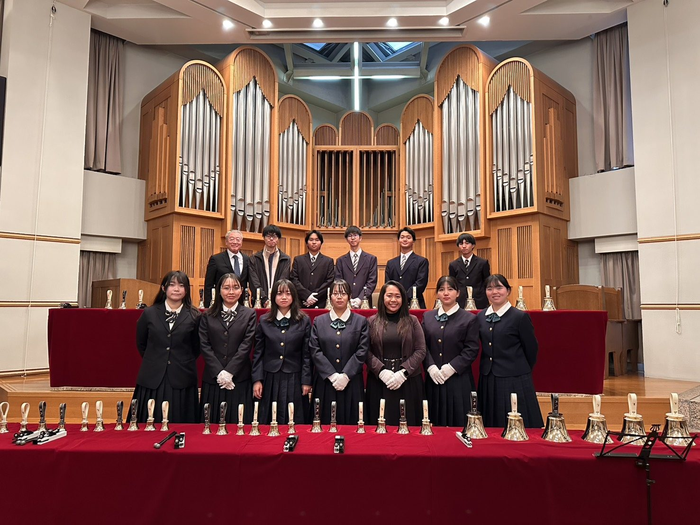
教会訪問
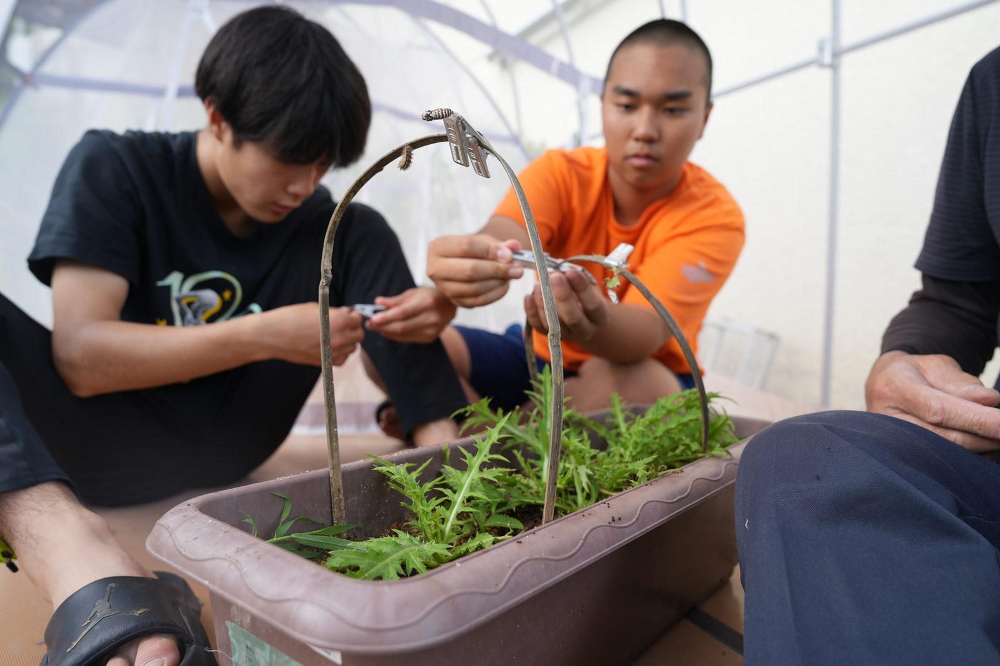
地域保全活動
「能登ボランティアでは、テレビでも報道しなくなって風化してしまっているけれど、まだまだ被災地が復興していないことに驚いていました。実際見ないと分からなかったと言っていました。」
高2保護者約8割以上の生徒が、音楽活動に参加。
開校当初から続く伝統の活動です。毎年約8割の生徒が、運動部と音楽活動を両立しています。音楽で心を通わせ、礼拝で歌い、地域で演奏する。クリスマスコンサートツアーは、学校の一大行事です。
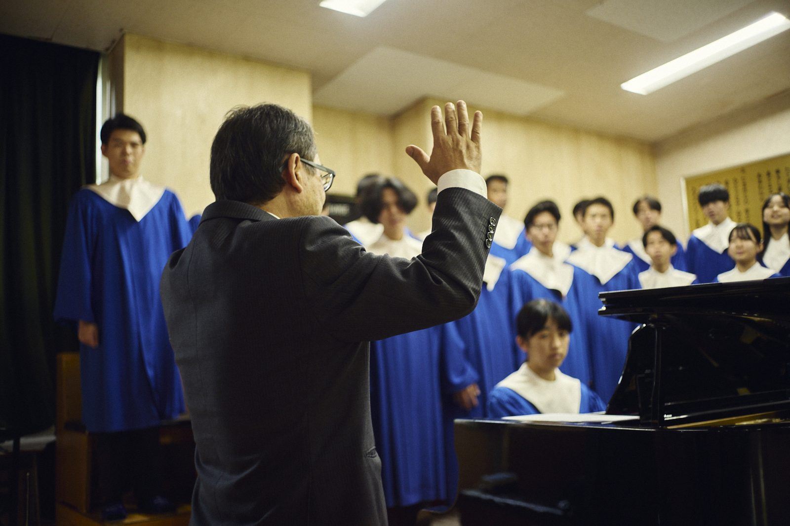
勉強もスポーツも、全部本気で。
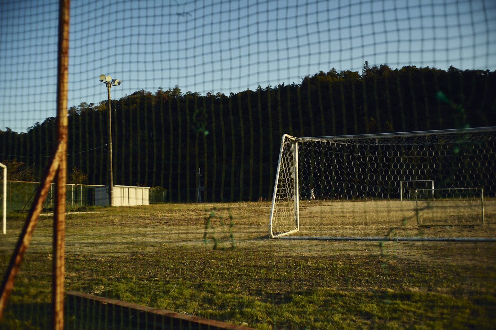
中学校｜全員参加チームでスポーツする楽しさを知る。
- 部活男女バスケットボール・バレーボール（男女合同）・サッカー・テニス（毎年、生徒の希望に応じて設置）
- 活動日日曜（午前）・水曜
- シーズンスポーツ月曜の放課後は、所属の枠を超えて、決められたスポーツをみんなで楽しみます。
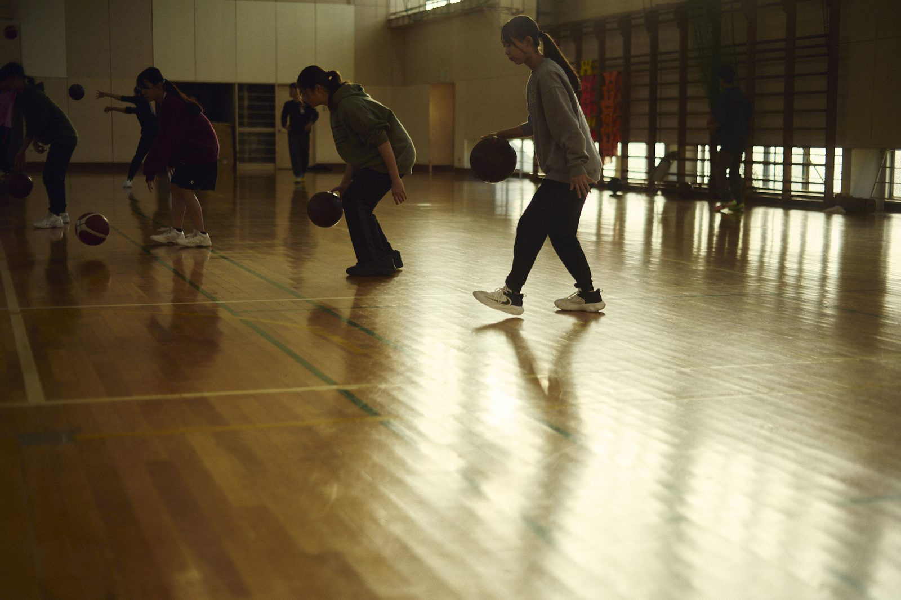
高等学校｜自主参加やりたい種目を、自分で選ぶ。
- 部活サッカー・男女バスケットボール・バレーボール（男女合同）・野球・陸上・バドミントン・テニス
- 活動日日曜（午後）・火曜・木曜
- 朝練種目によって、月・水・金曜の登校前に朝練を行います。
読むだけでは、三育はわからない。
ひとつでも気になったら、一度キャンパスへ。見学も、宿泊体験も、相談だけでも大丈夫です。